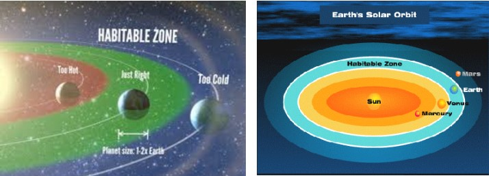
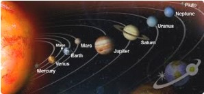
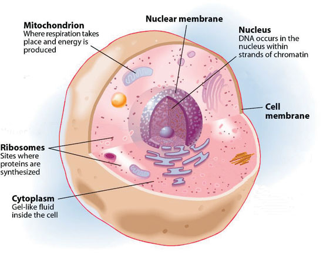
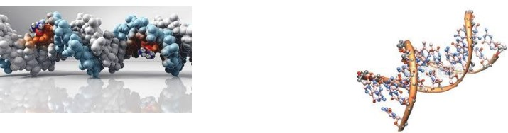

CONTENTS
UNIVERSE & LIFE
- Introduction
- The universe is designed to create its Intelligent observer
- Cooking of Carbon in Stars, to create carbon based life, started 10 billion years ago
ORIGIN OF LIFE وَلَقَدْ خَلَقْنَاكُمْ
- Coming of Adam on earth is announced - 3.7 billion years ago
- Origin of Life on Earth from a single living cell 3.7 billion years ago
LAW OF EVOLUTION ثُمَّ صَوَّرْنَاكُمْ
- The Law of Evolution - from Single Cell to Adam
- Quran summary of Human Evolution Process
- Brief summary of the Natural Law of evolution
- Capabilities That Distinguish Adam
- Adam: Responsibility, Authority ثُمَّ قُلْنَا لِلْمَلَائِكَةِ اسْجُدُوا لِآدَمَ and Accountability
Appendix 1
Time line of life on earth
1. INTRODUCTION
Our universe started started from nothing around 13.72 Billions years ago, with the same laws as prevalent today and with the time and space as fabric of the space. It has four dimension i.e. time, space right/left, up/down, fore/back. Our universe have energy in in active form and in form of matter which is frozen energy. In addition, our universe have fundamental forces and natural laws that dictate the interaction rules of fundamental forces. The laws of nature that have in its grip each single atom of the universe, never change, never deviate. Even the results of human free-will are controlled by laws given in Quran. Law of evolution is a special law in nature that handless event happening in the universe towards a particular direction step by step. (Al Ma'arij).
In the whole universe, every thing is conserved. Force of nature can be converted from one form to an other (malaika handover) but can never be destroyed. In the transforming process, the forces do wonders in nature or as the man dictates them to do. Similar, in the whole universe not a single iota of energy (pure energy + energy frozen in the form of matter) can be destroyed or injected.
The universe laws are written in mathematical codes, a hidden text written at some safe place, which under lie every thing. To discover the origin on naturals laws is not in the scope of science. Some scientist believe the natural laws are written at platonic world. (LOHE MAHFOOZ in UNIVERSE AMR)
Science reveal there is coherent scheme of every thing. Universe is integrated and acts like a giant computer. In the world below atomic level, the science rules are different. Time lose its significance. Future may shape past. Human awareness change the nature of event. Human mind speak to matter. The things move so fast that a second of time is like hundred of years. The time, which is fabric of space membrane in our universe, is as measured from different places or at different speed. At speed of light, the time stops. At the event horizon of a black-hole star (al kunnas) the time stops.
There are around 3 billion stars in a galaxy, and around 4 billions observable galaxies are in the universe. It is expected to be 300 billion light years across. Universe space is stretching with acceleration as the time pass
The above universe, with its laws and forces, created its own conscious intelligent observer within short time of 13.7 billion years. The universe is bound by start time and end time.
Human are at a small planet revolving around an isolated star. Human is made of dust particles are structured in a way that they make the only intelligent observer to the vast universe who can also glimpse the cosmic code.
The question is how did non living material develop the hardware and software known to be required by living organisms? How did nature develop the arbitrary protocol for communication and coordination among the thousands of computer worth information in each cell? We shall find the definite answers to the above questions below on this page.
General summary of the story of life as per science
The earth was constructed around 5 Billion years ago in the whirlpool of solar system in the making. Initially earth was too hot and there was no water on it. Meteorites from the outer belt, having crystals of frozen water, started falling on earth for about 15 million years, until the earth got water as available now. This quantity of water is necessary to keep the earth temperature uniform for life to prosper. There was air but without oxygen. Around 4.5 billion years ago moon was formed when another planet collided with the earth leaving its iron on earth and debris recollection again in the form of moon at a distance around 14000 km away around the earth. The moon gradually moved away at present location. Around 4.1 billion years ago the earth crust started building. When the crust was sufficiently cold, the water, which was in vapor form, started condensing into liquid form.
It took earth about one billion years to take shape with solid outer crust and oceans to appear. Earth crust is made of land plates that float over hot liquid iron located in between central solid iron core and outer earth. The land plates keep on moving with speed of millimeters per year. When two plates collide, it create upheaval in the form of earth quacks, hot lava shoot outs, tsunamis and formation of mountains.
3.7 Billion years ago in marshy landscape, within the soup of hot water and enriched clay, life emerged in the form of single cell of DNA. Life cell have qualities to replicate itself and gradually adapts to the factors of environment. Adaptation is special programming linked with life. Initially the life cell was without outer membrane.
We can still see the rudimentary single cell form of life in term of viruses, bacteria and fungus cells. Ameba cell is a perfect example as we are taught in schools with contemporary knowledge. The food of initial life cells was sulphur compounds and oxygen was the output and not the the input.
In the first one billion years the life progressed and produced oxygen in the environment. The life evolved so that it absorbed oxygen and used sunlight to produce food. At this stage, there was hardly anything to differentiate life into plants and animals.
About one billion years ago, the life started as multi cellular. Each area specialized into doing a special function. Even today, each cell contains the prints of full body. For further details, please refer the time line of the life given below.
2. The universe is designed to create its Intelligent observer
Anthropic Cosmological Principle
Quran
أَأَنتُمْ أَشَدُّ خَلْقًا أَمِ السَّمَاءُ ۚ بَنَاهَا ﴿٢٧﴾ رَفَعَ سَمْكَهَا فَسَوَّاهَا ﴿٢٨﴾ وَأَغْطَشَ لَيْلَهَا وَأَخْرَجَ ضُحَاهَا ﴿٢٩ وَالْأَرْضَ بَعْدَ ذَٰلِكَ دَحَاهَا ﴿٣٠﴾ أَخْرَجَ مِنْهَا مَاءَهَا وَمَرْعَاهَا ﴿٣١﴾ وَالْجِبَالَ أَرْسَاهَا ﴿٣٢﴾ مَتَاعًا لَّكُمْ وَلِأَنْعَامِكُمْ
Sura Annazighaat 79/27-33
27. Is it harder to create you or the heaven? That Allah built it,?"
28. Allah created these huge bodies high up in space. He then gave them balance and equilibrium
29. And in space, He made the night dark and brought forth light during daytime.
30. Next look at the earth. Earth and all the other celestial bodies were one mass, the Nebula. The earth was taken and thrown out of this, just like a stone being propelled away by a catapult (21:30).
31. The water was taken from the oceans by distillation (to regions of dry land). Thereafter We made vegetation grow in these regions;
32. And raised huge and firm mountains in these regions.
33. And We fashioned the entire system in a way that it would produce means of sustenance for you and your cattle.
Science - Anthropic Cosmological Principle
هَلْ أَتَىٰعَلَى الْإِنسَانِ حِينٌ مِّنَ الدَّهْرِ لَمْ يَكُن شَيْئًا مَّذْكُورًا
[76:1] HAS THERE [not] been an endless span of time before HUMAN when he was not yet a thing to be thought of?
How ADAM (human) was in the scheme of God from the start of the universe? God designed and sent the natural laws to end up in the form of a conscious intelligent observer.
ANTHROPIC PRINCIPLE: - The observed values of all physical and cosmological quantities are not equally probable but take on values restricted by the requirement that there exist sites where carbon-based life can evolve and by the requirement that the Universe be old enough for it to have already done so.
STRONG ANTHROPIC PRINCIPLE- The Universe must have those properties which allow life to develop within it at some stage in its history
There are numerous points many of them are too technical. All are fine tuned to produce life. A few are given as follows:
- The electromagnetic force is 39 orders of magnitude stronger than the gravitational force. If they were more comparable in strength, stars would have collapsed long before life had a chance to evolve.
- The vacuum energy density of the universe is at least 120 orders of magnitude lower than some theoretical estimates. If at any time it were as large as these calculations suggest, the universe would have quickly blown apart.
- The electron's mass is less than the difference in the masses of the neutron and proton. Thus, a free neutron can decay into a proton, electron, and anti-neutrino. If this were not the case, the neutron would be stable and most of the protons and electrons in the early universe would have combined to form neutrons, leaving little hydrogen to act as the main component and fuel of stars.
- The neutron is heavier than the proton, but not so much heavier that neutrons cannot be bound in nuclei, where conservation of energy prevents the neutrons from decaying. Without neutrons we would not have the heavier elements needed for building complex systems such as life.
- The carbon nucleus has an excited energy level at around 7.65 million electron-volts (MeV). Without this state, insufficient carbon would be manufactured in stars to form the basis for life. Using Anthropic arguments, astronomer Fred Hoyle predicted this energy level before it was confirmed experimentally.
- Gravitational constant: Determines strength of gravity. If lower than stars would have insufficient pressure to overcome Coulomb barrier to start thermonuclear fusion (i.e. stars would not shine). If higher, stars burn too fast, use up fuel before life has a chance to evolve.
- Strong force coupling constant: Holds particles together in nucleus of atom. If weaker than multi-proton particles would not hold together, hydrogen would be the only element in the Universe. If stronger, all elements lighter than iron would be rare. Also radioactive decay would be less, which heats core of Earth.
- Electromagnetic coupling constant: Determines strength of electromagnetic force that couples electrons to nucleus. If less, than no electrons held in orbit. If stronger, electrons will not bond with other atoms. Either way, no molecules.
- All the above constants are critical to the formation of the basic building blocks of life. And, the range of possible values for these constants is very narrow, only about 1 to 5% for the combination of constants. Outside this range, and life (in particular, intelligent life) would be impossible
UNIQUE EARTH
(1) For a long time scientists have known that the earth is a unique place.
- (a) Earth's distance from the sun keeps the temperature at a level suitable for life. The average temperature lies in the very narrow band where water is a liquid (0-100ºC), compared to the temperature range of -273ºC to >6,000,000ºC for the remainder of the universe.
- (b) Earth's nearly circular orbit keeps the yearly temperature variations to relatively small values.
- (c) Earth's magnetic field eliminates most of the lethal solar radiation entering the atmosphere.
- (d) Earth's upper atmosphere filters out X-ray radiation from the sun.
- (e) Earth's Ozone layer filters out most of the ultra violet radiation.
- (f) Earth's axial tilt is perfect. If it were any smaller, more of the surface would be lost to ice caps or equatorial deserts. If it were larger, greater portions of the surface would have 6 months of darkness and 6 months of light. Fewer places would be habitable.
- (g) Earth's mass, density, radius, rate of spin, weather systems, atmospheric pressure and chemical make-up all produce the unique conditions that allow life forms to survive.
- (h) Earth has an abundance of water, matching the high water content of living things.
- (i) Earth's water is unique. It is the only chemical that expands when it solidifies. This means that the frozen water at the ice caps floats, rather than sinks. If ice sank when it formed, more and more ocean water would freeze to ice so that the polar seas and beyond would be a solid block of ice.
(2) Even the planets either side of Earth have conditions unsuitable for life.
(3) All these unique characteristics of Earth point to an intelligent designer, not to evolution.
(4) Evolutionists have countered this argument by hypothesizing that the universe is full of planets, and Earth just happened to have the correct formula for life, by chance.
"They said there are countless other planets unlike Earth, and Earth happened by chance to have the properties necessary for life. Therefore, they conclude, the universe has no special favor toward the earth or life." [W.J. ReMine p:59]
(5) This explains the avid quest by evolutionists to discover other planets in the universe.
UNIQUE UNIVERSE
1) Scientific discoveries in recent decades have also shown that the universe itself has a number of characteristics that are essential for life.
"Over many years had grown up a collection of largely unpublished results revealing a series of mysterious coincidences between the numerical values of the fundamental constants of Nature. The possibility of our own existence seems to hinge precariously upon these coincidences." [J.D. Barrow & F.J. Tipler "The Anthropic Cosmological Principle" (paperback revised edition), Oxford University Press: New York, 1988,
(2) The universe's fundamental parameters seem to have been finely tuned to make life possible.
- (a) The charges and masses of atomic particles are exact. "[I]f the electric charge of the electron had been only slightly different, then stars would be unable to burn hydrogen and helium, [their fuels]". [S.W. Hawking "A Brief History of Time: From the Big Bang to Black Holes", Bantam Books: New York, 1988 p:125]
- (b) Atomic forces are exact, within a very fine tolerance. "If the relative strengths of nuclear and electromagnetic forces were slightly different, then carbon atoms could not exist in nature and therefore humans could not exist." [J.D. Barrow & F.J. Tipler "The Anthropic Cosmological Principle" (paperback revised edition), Oxford University Press: New York, 1988 p:5]
- (c) Electromagnetism and gravitational attraction are fine-tuned. [W.J. ReMine p:59]
- (d) To the evolutionist, the expansion rate of the universe had to have been exact. "If the rate of expansion one second after the big bang had been smaller by even one part in a hundred thousand million million [1017], the universe would have collapsed before it ever reached its present size." [S.W. Hawking "A Brief History of Time: From the Big Bang to Black Holes", Bantam Books: New York, 1988 p:121-122]
- "The cosmos threatened to re collapse within a fraction of a second or else to expand so fast that galaxy formation would be impossible. To avoid these disasters its rate of expansion at early instants needed to be fine tuned to perhaps one part in 1055 (which is 10 followed by 54 zeros)." [J. Leslie "Universes", Routledge: New York, 1989 p:3]
These fundament parameters point to the possibility that the universe had been specially designed for life by a rational mind. (see Freeman Dyson "Disturbing the Universe", Harper & Row Pub: New York, 1979 p:245-253)
3. COOKING CARBON IN STARS TO MAKE CARBON BASED LIFE STARTED 10 BILLION YEARS AGO
The great contemporary scientist Steve Hawking, in his book The Grand Design, chapter Apparent Miracle writes that:
"For us to exist, the universe must contain elements such as carbon, which are produced by cooking lighter elements inside stars. The carbon must then be scattered through space in a supernova explosion (explosion of massive star 100 time bigger than our sun), and eventual condense as part of a planet in a new generation solar system (such as ours). In 1961, physicist Robert Dicke argued that the process takes about 10 billion years, so our being here means that the universe must be at least that old. On the other hand, the universe cannot be much older than 10 billion years, since in the far future all the fuel for stars will have been used up, and we require hot stars for our sustenance. Hence the universe must be about 10 billion year old. That is not extremely precise prediction but that is true – according to current data the big bang occurred about 13.7 billion years ago."
10 Billion Years ago: START FROM GALAXY FORMATION
Elements formation to create of Adam started 10 billion years ago. The universe was just about 4 billion years old and there was nothing much except light elements such as hydrogen, and helium. First generation of large gaseous stars appeared. Each star shines with nuclear fusion and act like a time bomb. Bigger the star, quickly it burn its fuel and shorter is its life. At the end, the star explode in the form of great fire work of the nature in the sky. The event of great explosion is called supernova. Our sun is one of the smallest stars and has 10 billion year life. Very large star last for around two to five billion years.
تُمْ أَشَدُّ خَلْقًا أَمِ السَّمَهَا ﴿٧ رَفَعَ سَمْكَهَا فَسَوَّاهَا ﴿٨
79/27: Are you the harder to create or the heaven? He made it.
79/28: Allah created these huge bodies high up in space. He then gave them balance and equilibrium so that they would remain stable and continue on their path.
When Generation 1 star started exploding, they cooked and spread elements like carbon, oxygen, nitrogen into clouds of dust and gas. Such clouds in the galaxy, rich of the exploded star contents, breed new solar and planet systems.
8 Billion years ago: HUGE COOKING FACTORIES BUILT TO MAKE HUMAN INGREDIENTS – AND THE EARTH ELEMENTS
(About 8 billion years ago) Generation 2 stars were made. Some of these were as big in volume as 1000 suns. The main purpose to make giant stars was to produce all other heavy elements necessary to make ADAM. Giant stars are cooking factories of heavy elements like iron, copper, zinc, silver, gold, platinum, mercury, uranium etc. When such a giant star explode, energy produced is like billions of suns. Elements shoot out with the very high speed into the open space to make planetary nebula. Powerful gamma radiation shooting out form south and north pole, near to the speed of light, push clouds of planetary nebula . Such a shoot-out initiates a new solar and planet system. (Please refer solar system formation on this website)
5 billion years ago: MAKING OF HOME FOR ADAM
Such a giant star exploded as supernova, to shoot out newly cooked all of the elements that were necessary to make earth. Shoot out from newly exploded star initiated a new solar system. Whirlpool of gases and elementary atoms with sun at centre reached at a critical mass, Hydrogen inside the centre of the whirlpool, under heavy pressure of gravity became too hot and ignited to form Helium. The light of our sun appeared. The heat of sun pushed gases circulating in whirlpool, away to form Jupiter and other gas planets. Heavy elements remained at inner circle of whirlpool to form 200 small earths. Many earths merged into one another and a few were left at the end. Earths made in the cold outer circle between earth and Jupiter, were full of water in ice form. With the help of Jupiter, Saturn, Uranus and Neptune, water full planets, made in asteroid belt, were thrown towards Earth, Mars Venus and Mercury. Our earth was one of the remaining planets at green zone distance from our sun, which is appropriate retain water in liquid condition and to support life. Later, an other small planet hit our earth, left its iron at our earth and slipped out with remaining matter to form as our moon. So our moon has little iron at its core.

Quran
Earth Formation & Plcement
وَجَعَلْنَا فِي الْأَرْضِ رَوَاسِيَ أَن تَمِيدَ بِهِمْ
21/31: And We have made earth with solid structure so that as it continuously remain in the condition of quivery i.e. revolving but with no demolition or disturbance to the inhabitants
Science information
- Speed Spinning speed of Earth 1670 km/hour
- Speed of Earth around Sun: 107,200 km/hour
- Speed of Sun Around milky way center: 782,000 km/hour
- Speed of Milky Way to other galaxy 483,000km/hour
- Speed of galaxy constellation in space : 2.15Million km per hour OR 600 km/second

CONTENTS - ORIGIN OF LIFE
- Coming of Adam on earth is announced - 3.7 billion years ago
- Origin of Life on Earth from a single living cell 3.7 billion years ago
- Unit of Life - A living cell
1. COMING OF OBSERVER ON EARTH IS ANNOUNCED
QURAN
Adam, Bashar, Insaan, same (15/28,33)
إِذْ قَالَ رَبُّكَ لِلْمَلَائِكَةِ إِنِّي خَالِقٌ بَشَرًا مِّن طِينٍ ﴿٧١﴾ فَإِذَا سَوَّيْتُهُ وَنَفَخْتُ فِيهِ مِن رُّوحِي فَقَعُوا لَهُ سَاجِدِينَ ﴿٧٢﴾ فَسَجَدَ الْمَلَائِكَةُ كُلُّهُمْ أَجْمَعُونَ
38/71 Your Sustainer told the 'Malaika' (heavenly forces) that "I am about to initiate the creation of a human being from inanimate matter
38/72. When the human being reaches a stage where it has acquired the best of proportions in every respect (after passing through all the developmental/evolutionary stages), and I breathe into it a sparkle of My energy, he attains a human personality capable of making choices and discretions. Then, at that stage, you (Malaika) should bow before him.
38/73. According to this program, all the heavenly forces bowed before him;
STATUS OF MANKIND ON EARTH
PLEASE SEE PAGE ON THIS SIDE AS STATUS OF MANKIND
Breif Summary
ADAM, MALAIYKA & SHAITAN - ROLES DEFINED
After God سَوَّيْتُهُ fashioned adam and وَنَفَخْتُ فِيهِ مِن رُّوحِي and breath into adam ADAM HIS spirit (free will). فَإِذَا سَوَّيْتُهُ وَنَفَخْتُ فِيهِ مِن رُّوحِي فَقَعُوا لَهُ سَاجِدِينَ Forces of nature ordered to subdue ADAM 15:29 (So adam can subdue forces of nature in the form of technology and development)
One force IBLEES refused. It is not subdued. IBLEES is the cause of arrogant behaviour in human 2:34 15:31 (Note Nature of shaitan is made fiery. Shaitan is a source of selfish emotions inside human to provide second choice, to broaden the scope of human free will. Selfish deeds generate hell society, deeds to benefit others generate welfare society)
Shaitan will remain with human in this world (Human will have free will to choose from good and bad) 7:15 15:36
If ADAM take the responsibility of its action, ADAM is free to go forward. Under shaitan influence, if ADAM say I am not responsible, God is responsible for what I choose to do, then such a person will go to hell. 7:16-23
Jennet of ADAM: roam around everywhere and eat and drink whatever you want, no payment, no restrictions, peace everywhere. 7:19
Shaitan pursued ADAM to get eternal life through reproduction, children's. 7:20
Situation of Jennet life vanished. Selfishness had to make people the enemy of one an other in this world. 7:25-27
Prophets will come to the humans, who so ever follow the good living guidance, the deeds oriented to benefit others, will have no need to worry about. 7:35
All, being ADAM, are respectful وَلَقَدْ كَرَّمْنَا بَنِي آدَمَ 17:70
2. ORIGIN OF LIFE ON EARTH FROM A SINGLE LIVING CELL
Earth was there but with no life no human
أَوَلَا يَذْكُرُ الْإِنسَانُ أَنَّا خَلَقْنَاهُ مِن قَبْلُ وَلَمْ يَكُ شَيْئًا
[19:67] But does man not bear in mind that We had previously created him when he was no thing.
QURAN
ORIGIN OF LIFE FROM MOIST CLAY
وَلَقَدْ خَلَقْنَا الْإِنسَانَ مِن صَلْصَالٍ مِّنْ حَمَإٍ مَّسْنُونٍ [15:26] Creation of man was initiated with a life-cell produced by the combination of water and clay moulded out of bleak loam.
خَلَقَ الْإِنسَانَ مِن صَلْصَالٍ كَالْفَخَّارِ [55:14] The creation of human was initiated out of clay that starts to tinkle when it becomes dry; that is from inanimate matter which had no trace of life whatsoever
فَاسْتَفْتِهِمْ أَهُمْ أَشَدُّ خَلْقًا أَم مَّنْ خَلَقْنَا ۚ إِنَّا خَلَقْنَاهُم مِّن طِينٍ لَّازِبٍ
37/11 As far as creation is concerned, are these inert bodies (which have no discretionary authority) capable of having more power than the human being, whom We have endowed with intellect and discretion? All these planets are only masses of particles which are attached together; whereas human life has progressed and passed through innumerable stages of development (32:7).
الَّذِي أَحْسَنَ كُلَّ شَيْءٍ خَلَقَهُ ۖ وَبَدَأَ خَلْقَ الْإِنسَانِ مِن طِينٍ ﴿٧﴾ ثُمَّ جَعَلَ نَسْلَهُ مِن سُلَالَةٍ مِّن مَّاءٍ مَّهِينٍ ﴿٨﴾ ثُمَّ سَوَّاهُ وَنَفَخَ فِيهِ مِن رُّوحِهِ ۖ وَجَعَلَ لَكُمُ السَّمْعَ وَالْأَبْصَارَ وَالْأَفْئِدَةَ ۚ قَلِيلًا مَّا تَشْكُرُونَ ﴿٩﴾
32/7. For this purpose He has maintained an excellent balance in the creation of everything; and one of His schemes is the creation of man. (After the scheme was established in His Aalm-e-Amr) man's creation was initiated from inorganic matter which before you, was lying lifeless in the form of clay.
32/8. (Then this inorganic matter became mixed with water ~ 37:11 ~ and the first life cell appeared. As this process continued through various stages of evolution and reached a point where, from the cohabitation of a male and a female, man's progeny started through procreation.)
32/9. Thereafter, God's Law creates proper balance in the unborn baby. (Up to this stage the process of creation is common between man and animal. However after this, human beings go through a different emergent and evolutionary process which is completely different from that of animals. That is) God infuses into man a spark of His Divine Energy (which is called 'human personality' and which gives him ability for discretion and choice).
HUMAN CREATED THROUGH SINGLE LIVING CELL
يَا أَيُّهَا النَّاسُ اتَّقُوا رَبَّكُمُ الَّذِي خَلَقَكُم مِّن نَّفْسٍ وَاحِدَةٍ وَخَلَقَ مِنْهَا زَوْجَهَا وَبَثَّ مِنْهُمَا رِجَالًا كَثِيرًا وَنِسَاءً ۚ
4/1 O humanity! adhere to the Laws of your Sustainer Who initiated your creation with a single life-cell. which split into two parts – one male and the other female – and through them spread so many men and women in the world.
خَلَقَكُم مِّن نَّفْسٍ وَاحِدَةٍ ثُمَّ جَعَلَ مِنْهَا زَوْجَهَا
[39:6] It is He Who created you from a single being, and then from the same being created its spouse
هُوَ الَّذِي خَلَقَكُم مِّن نَّفْسٍ وَاحِدَةٍ وَجَعَلَ مِنْهَا زَوْجَهَا لِيَسْكُنَ إِلَيْهَا ۖ
7/189 Allah is He Who created you from a single life-cell and out of that your spouse, which split into two parts - one male and the other female (4/1) in order that the spouses may live together in mutual comfort
SCIENCE
(4 Billion years ago) Our earth came into to existing shape adequately cold to retain water, and sold surface. At marshy place, the first DNA explicator live cell appeared. Since DNA is highly complicated in form, it was among the series of special phenomenon in nature. (There are three special phenomena in nature: big bang, life, revelation) It was the start of the creation of ADAM from basic elements from clay on earth and water.
3. UNIT OF LIFE - A LIVING CELL
Animals and plants are made of living cell. Each cell is a small unit with complete set of nourishment, reproduction, medical, information and communication facilities. Incoming blood in veins provide food and air and outgoing blood serves as sewerage system to dispose of waste. Power generation system provide heat and energy which can be communicated and coordinated with the surrounding cells. At the time of danger or accident, burning etc, the cell in an animal body, immediately send message to brain for ordering appropriate action.

ROLE OF 'D N A' IN A LIVING CELL
DNA contains the instructions needed for an organism to develop, survive and reproduce. To carry out these functions, DNA sequences must be converted into messages that can be used to produce proteins, which are the complex molecules that do most of the work in our bodies.
An important property of DNA is that it can replicate, or make copies of itself. Each strand of DNA in the double helix can serve as a pattern for duplicating the sequence of bases. This is critical when cells divide because each new cell needs to have an exact copy of the DNA present in the old cell.

DNA (deoxyribonucleic acid) is a molecule which contains the biological instructions that make each species unique. DNA, along with the instructions it contains, is passed from adult organisms to their offspring during reproduction.
DNA is found inside a special area of the cell called the nucleus. Because the cell is very small, and because organisms have many DNA molecules per cell, each DNA molecule must be tightly packaged. This packaged form of the DNA is called a chromosome.
During DNA replication, DNA unwinds so it can be copied. At other times in the cell cycle, DNA also unwinds so that its instructions can be used to make proteins for other biological processes. But during cell division, DNA is in its compact chromosome form which enables it to transfer to new replicate cells.
Besides the DNA located in the nucleus, humans and other complex organisms also have a small amount of DNA in cell structures known as mitochondria. Mitochondria generate the energy the cell needs to function properly.
In sexual reproduction, organisms inherit half of their nuclear DNA from the male parent and half from the female parent. However, organisms inherit all of their mitochondrial DNA from the female parent. This occurs because only egg cells, and not sperm cells, keep their mitochondria during fertilization.
CHANCES OF ORIGIN OF LIFE WITH KNOWN SCIENCE POSSIBILITIES
Total Protons in the known universe 1080
Statistical Probability
Considered operationally impossible if chance to occur is 1:1070
Considered Technically impossible if chance to occur is 1:1096
Chance of DNA formation in nature is 1:10340,000,000
In addition, each DNA has information software in it equivalent to thousands of computer. Consciousness or free-will in the brain cells, is so far not addressed by science. It maybe because, so far, consciousness is not known as some thing physical in nature.
Instead of exploring the life with existing known natural laws, in other planets, it is more appropriate to look if the life originated for the second time on the earth in its 4.5 billion years life? It is because the Earth is most suitable for existence of life.
So far human did not find life originated other than the first event 3.7 billions years ago.
ORIGIN OF LIFE FROM THE STANDPOINT OF SCIENCE
3.7 Billion years ago in marshy landscape, within the soup of hot water and enriched clay, life emerged in the form of single cell of DNA. Existence of life is considered the proof of the origin of life. Life cell have qualities to replicate itself together with information software and ability to adapt gradually to the factors of environment. Adaptation is special programming linked with life. Initially the life cell was without outer membrane, which is still found in nature in the form of virus.
We can still see the rudimentary single cell form of life in term of viruses, bacteria and fungus cells. Ameba cell is a perfect example as we are taught in schools with contemporary knowledge. The food of initial life cells was sulphur compounds and oxygen was the output and not the the input.
In the first one billion years the life progressed and produced oxygen in the environment. The life evolved so that it absorbed oxygen and used sunlight to produce food. At this stage, there was hardly anything to differentiate life into plants and animals.
About one billion years ago, the life started as multi cellular. Each area specialized into doing a special function. Even today, each cell contains the prints of full body. For further details, please refer the time line of the life given as appendix on next page.
CONTENTS - LAW OF EVOLUTION
- The Law of Evolution - from Single Cell to Adam
- Quran summary of Human Evolution Process
- Brief summary of the Natural Law of evolution
- Capabilities That Distinguish Adam
- Adam: Responsibility, Authority and Accountability
Appendix 1
Time line of life on earth
1. THE LAW OF EVOLUTION - FROM SINGLE CELL TO ADAM
QURAN
Sequence of events: 7/11
وَلَقَدْ خَلَقْنَاكُمْ ثُمَّ صَوَّرْنَاكُمْ ثُمَّ قُلْنَا لِلْمَلَائِكَةِ اسْجُدُوا لِآدَمَ فَسَجَدُوا إِلَّا إِبْلِيسَ لَمْ يَكُن مِّنَ السَّاجِدِينَ
(1) We created you, then (2) We shaped you, then (3) We said to the Forces of Nature: 'Bow yourselves to Adam'; (4) so they bowed themselves, save Iblis -- he was not of those that bowed themselves.
LAW OF EVOLUTION a guided law of nature. This law of God leads every thing to perfection
Science: survival to the fittest (non-fit vanish) – adaptation to the environment (who cannot adopt or change, do not survive)
يَمْحُو اللَّـهُ مَا يَشَاءُ وَيُثْبِتُ ۖ وَعِندَهُ أُمُّ الْكِتَابِ
[13:39] اللہ جس چی کو چاہتا ہے مٹادیا ہے ی برقر ار رکھتا ہے کہ اصل کتاب اسیکے پاس ہے
The basic law of evolution is that those species which acquire the capacity to survive remain whilst the rest are eliminated. This is the law, the source of which is with Allah
Process of evolution
وَهُوَ الَّذِي أَنشَأَكُم مِّن نَّفْسٍ وَاحِدَةٍ فَمُسْتَقَرٌّ وَمُسْتَوْدَعٌ ۗ قَدْ فَصَّلْنَا الْآيَاتِ لِقَوْمٍ يَفْقَهُونَ
6/99 It is He who has created you out of a single life-cell . In the process of evolution, life pauses for a while until it acquires the capacity to reach a higher plane to which it is entrusted for further development. Thus We have made Our plans clear to those who are thoughtfu
The Law of Step by Step creation
اللَّـهُ يَبْدَأُ الْخَلْقَ ثُمَّ يُعِيدُهُ ثُمَّ إِلَيْهِ تُرْجَعُونَ ﴿١ [30:11] All this continued happening according to the Divine Law; (1) the Law as per which Allah initiates the creation of everything يَبْدَأُ الْخَلْقَ. (Initially, it is an undeveloped form. Then) (2) He puts it through various levels of evolution ثُمَّ يُعِيدُهُ and (3) at every stage takes it (including human beings) nearer to the point that is destined for it by Him ثُمَّ إِلَيْهِ تُرْجَعُونَ. (The same happens with nations.)
Initiates creation and then gives it turns time after time
85/13إِنَّهُ هُوَ يُبْدِئُ وَيُعِيدُ
وَهُوَ الْغَفُورُ الْوَدُودُ 85/14
ذُو الْعَرْشِ الْمَجِيدُ 85/15
85:13 He it is who initiates creation and then gives it turns time after time (to bring it gradually into final shape)
85: 14-15 He is الْغَفُورُ the protector against the forces of disintegration and الْوَدُود the bestower of mutual attraction between the objects and the one who has control over the entire universe
Create-Fashion-Shape
هُوَ اللَّـهُ الْخَالِقُ الْبَارِئُ الْمُصَوِّرُ . Allah created us, shaped us and made us well proportioned
- He Creates
- unnecessary elements wither away
- shapes in distinguish form
Create-Fashion-synchronize & Fine Tune- suitable form
الَّذِي خَلَقَكَ فَسَوَّاكَ فَعَدَلَكَ 82/7. The Rabb (sustainer) took you through various evolutionary stages one after the other; and خَلَقَكَ fashioned you by فَسَوَّاكremoving unnecessary elements, thereby فَعَدَلَكَ creating excellent balance, proportion and symmetry in you .
فِي أَيِّ صُورَةٍ مَّا شَاءَ رَكَّبَكَ 82/8. Thereafter, according to His Law of MASHIYYAT, He gave you a suitable form .
Evolution occurs in steps
مِّنَ اللَّـهِ ذِي الْمَعَارِجِ
70:3. It is taking some time because it will occur according to Allah's Law of Mukafat. He completes all His schemes in ascending steps of evolution. He does not take it from the beginning to its culmination in one go; it is completed gradually.
2. QURAN SUMMARY OF HUMAN EVOLUTION PROCESS 32/5-11
يُدَبِّرُ الْأَمْرَ مِنَ السَّمَاءِ إِلَى الْأَرْضِ ثُمَّ يَعْرُجُ إِلَيْهِ فِي يَوْمٍ كَانَ مِقْدَارُهُ أَلْفَ سَنَةٍ مِّمَّا تَعُدُّونَ ﴿٥﴾ ذَٰلِكَ عَالِمُ الْغَيْبِ وَالشَّهَادَةِ الْعَزِيزُ الرَّحِيمُ ﴿٦﴾ الَّذِي أَحْسَنَ كُلَّ شَيْءٍ خَلَقَهُ ۖ وَبَدَأَ خَلْقَ الْإِنسَانِ مِن طِينٍ ﴿٧﴾ ثُمَّ جَعَلَ نَسْلَهُ مِن سُلَالَةٍ مِّن مَّاءٍ مَّهِينٍ ﴿٨﴾ ثُمَّ سَوَّاهُ وَنَفَخَ فِيهِ مِن رُّوحِهِ ۖ وَجَعَلَ لَكُمُ السَّمْعَ وَالْأَبْصَارَ وَالْأَفْئِدَةَ ۚ قَلِيلًا مَّا تَشْكُرُونَ ﴿٩﴾ وَقَالُوا أَإِذَا ضَلَلْنَا فِي الْأَرْضِ أَإِنَّا لَفِي خَلْقٍ جَدِيدٍ ۚ بَلْ هُم بِلِقَاءِ رَبِّهِمْ كَافِرُونَ ﴿١٠﴾ قُلْ يَتَوَفَّاكُم مَّلَكُ الْمَوْتِ الَّذِي وُكِّلَ بِكُمْ ثُمَّ إِلَىٰ رَبِّكُمْ تُرْجَعُونَ ﴿١١
Start from lowest level to up in steps of say 1000 years: 32/5. When, according to His Mashiyyat He plans a scheme, He initiates it from the lowest level and then it slowly and steadily develops to its destination as established by God. The duration of these evolutionary stages, according to your count, may be a thousand years; (70/4 fifty thousand years).
God aware of latest potentialities and to the extent theses are to be manifested: 32/6. This process of creation and evolution is in force by the Almighty, Who is aware of the latent potentialities of everything and also knows the extent to which these have manifested themselves. All this happens as per the Divine Law, which has the power to take everything to its destination, through proper development.
Human from In-organic matter: 32/7. For this purpose He has maintained an excellent balance in the creation of everything; and one of His schemes is the creation of man. Human's creation was initiated from inorganic matter which before you, was lying lifeless in the form of clay.
Then through Procreation: 32/8 As this process continued through various stages of evolution and reached a point where, from the cohabitation of a male and a female, man's progeny started through procreation.
Injection of Free-Will and senses: 32/9. Thereafter, God's Law creates proper balance in the unborn baby. God infuses into man a spark of His Divine Energy (which is called human personality' and which gives him ability for discretion and choice). He endows unto you the faculties of hearing and seeing as well as a mind. Yet only few people use these faculties properly.
How we can come to life again?: 32/10. It is strange that the human beings We created out of lifeless inorganic matter, raise the objection, "How is it possible that after we are dead and lost in the dust, that we will again be restored to a new life?" In fact the only people who raise these objections are those who do not want to face the Law of Mukafat and want to get away from being accountable for their deeds.
Being driven to the Future Beyond: 32/11. Tell them, "Our heavenly forces under whose control your physical system functions, are taking you gradually towards death; and a day will come when your physical machinery will stop functioning. But this will only destroy your body. Your human personality does not perish, for it goes beyond; and its future is determined by the deeds performed by you in this world.
Duration of steps 50,000 years or more
تَعْرُجُ الْمَلَائِكَةُ وَالرُّوحُ إِلَيْهِ فِي يَوْمٍ كَانَ مِقْدَارُهُ خَمْسِينَ أَلْفَ سَنَةٍ
70:4. He initiates His scheme from the lowest point and then the heavenly forces (which are functioning in the 'realm of creation' - Khalq) and the Divine Energy (which is at work in the realm of Amr) uplift that process and pass it through various stages of development. These stages take years and years to complete. And the duration of some of them is thousands of years; may be fifty thousand years
Step by step towards better and superior
وَقَدْ خَلَقَكُمْ أَطْوَارًا [71:14] seeing that He has created you in successive stages?
71/14. "How can you attain this state of life? For this you should ponder over the Divine Law of Creation, according to which you have passed through various evolutionary stages to attain human form."
Stage by Stage towards heights
لَتَرْكَبُنَّ طَبَقًا عَن طَبَقٍ [84:19] That you will climb from stage to stage.
84:19. These cosmic phenomena are testimony to the fact that you too would ascend, through various stages of development, towards new heights. When you conform with one stage, you shall attain the capability to go to the next, thus attaining new heights stage by stage (with the process continuing even after death).
Create - Fashion - provide capabilities - provide guidance
الَّذِي خَلَقَ فَسَوَّىٰ
87/2 (a ) Creates everything by combining different elements and giving it a particular form;
87/2 (b) Thereafter, by eliminating extra and unnecessary elements, creates proportion and balance in it;
وَالَّذِي قَدَّرَ فَهَدَىٰ
87/3 (c) Then, according to a set and determined measure قَدَّرَ, inculcate in it the capability for further development and growth (this is called the 'Taqdeer' of that thing).
87/3 (d) He then guides it on the course which will help it attain its completion فَهَدَى. (This guidance is inherently placed into everything. It is called its 'nature' or instinct.)
Provide nourishment, Establish at one stage, then handover to the next stage
وَمَا مِن دَابَّةٍ فِي الْأَرْضِ إِلَّا عَلَى اللَّـهِ رِزْقُهَا وَيَعْلَمُ مُسْتَقَرَّهَا وَمُسْتَوْدَعَهَا
ۚ كُلٌّ فِي كِتَابٍ مُّبِينٍ
11:6 There is no living being on the face of the earth for whom means of nurture have not been provided by Allah. Life is not static but passes through evolutionary stages. It pauses for a while at a particular stage until it acquires the capacity to reach a higher plane to which it is entrusted for further development. The sustenance received at each stage should meet the requirements of that stage. All this is clearly indicated in the book containing Allah's Laws.
SCIENCE
3. BRIEF SUMMARY OF THE NATURAL LAW OF EVOLUTION
Evolution is generally defined as changes in trait or gene frequency in a population of organisms from one generation to the next. This has been dubbed the standard genetic definition of evolution. Natural selection is only one of several mechanisms in the theory of evolutionary change that explains how organisms historically adapt to changing environments.
As the life progress, species that adopt to environment and the spices that are more fit to the environment survive better. Species that can not adopt to the environment, eliminate.
From one life cell, life in all forms spread on earth. Second example of creation of life, so far, is not found on earth since 4.6 billion years when the earth planet was created. First single cell appeared 3.7 billions years ago. Multi cellular life started about 1 billion years ago. Initially the multi cellular life split into plants and animals and there after spread into millions of species of plants and animals. There has been many periods of destructions, that kept the evolution of human in focus.
Around 300,000 years ago, the human appeared in its existing form. Domestication of plants and animals started around 11 000 years ago.
4. CAPABILITIES THAT DISTINGUISH ADAM
Human given Consciousness and Free-Will
وَإِذْ قَالَ رَبُّكَ لِلْمَلَائِكَةِ إِنِّي خَالِقٌ بَشَرًا مِّن صَلْصَالٍ مِّنْ حَمَإٍ مَّسْنُونٍ ﴿٢٨﴾ فَإِذَا سَوَّيْتُهُ وَنَفَخْتُ فِيهِ مِن رُّوحِي فَقَعُوا لَهُ سَاجِدِينَ ﴿٢٩﴾ فَسَجَدَ الْمَلَائِكَةُ كُلُّهُمْ أَجْمَعُونَ ﴿٣٠﴾ إِلَّا إِبْلِيسَ أَبَىٰ أَن يَكُونَ مَعَ السَّاجِدِينَ ﴿٣١
Recall when your Lord said to the controllers: "I will indeed bring into being a human being out of dry ringing clay wrought from black mud. (Having passed through various evolutionary stages [by controllers of the nature], life, manifested itself in the form of human beings) who were endowed with freedom of the will and choice (2/30).. At that stage the Malaika were asked to bow before Man. Thus all of the controllers bowed except for Satan who chose to be defiant
Note: With technological developments, forces of nature, in line with laws of nature (MALAIKA - angles) conform to the human needs.
Scope of human knowledge
وَعَلَّمَ آدَمَ الْأَسْمَاءَ كُلَّهَا
After this he taught Adam the names of all things (in current universe)
Name is the basic block of knowledge. Human, has been endowed with the capacity to acquire knowledge of how other things function and inter-relate, and how new things can be formed by combining existing elements.
Human given the ability to express his thoughts through power of speech
خَلَقَ الْإِنسَانَ عَلَّمَهُ الْبَيَانَ
55:3-4. This is from the Almighty Who not only created man but also gave him the ability to express his thoughts (power of speech), which is not available to other species. (For imparting guidance to mankind, He chose the process of Wahi, whereby one person receives guidance from the Almighty and then conveys it to other human beings. This mode of communication is confined to man alone.)
Human given the capability to communicate through writing
الَّذِي عَلَّمَ بِالْقَلَمِ ﴿٤﴾ عَلَّمَ الْإِنسَانَ مَا لَمْ يَعْلَمْ ﴿٥﴾ كَلَّا إِنَّ الْإِنسَانَ لَيَطْغَىٰ ﴿٦﴾ أَن رَّآهُ اسْتَغْنَىٰ ﴿٧﴾ إِنَّ إِلَىٰ رَبِّكَ الرُّجْعَىٰ
96/4. To achieve this objective, the Almighty gave man the capability to communicate his ideas to distant places, through writings. This brings human beings closer to one another, despite long distances and differences in time, and paves the way for unity of mankind.
96/5. Then (through Wahi) He imparted knowledge that man did not have before.
96/6-7. However, man believes that he does not need Wahi and devises his own system based on selfish interests. In that system, the person who somehow amasses immense wealth, believes that he does not need others and thereby rebels against the concept of universal nourishment of mankind.
96/8. However haughty and rebellious he may be, one day he has to come to the system of your Rabb. This is so because there is no other solution to his problems.
RESPONSIBILITY, AUTHORITY AND ACCOUNTABILITY
For details pl see link (status of Adam)
RESPONSIBILITY
وَمَا خَلَقْتُ الْجِنَّ وَالْإِنسَ إِلَّا لِيَعْبُدُونِ ﴿٥٦﴾ مَا أُرِيدُ مِنْهُم مِّن رِّزْقٍ وَمَا أُرِيدُ أَن يُطْعِمُونِ ﴿٥٧﴾ إِنَّ اللَّـهَ هُوَ الرَّزَّاقُ ذُو الْقُوَّةِ الْمَتِينُ
To develop potential abilities following the divine laws
51/56: Remember the fact that the very objective of the creation of human beings, whether Jin or Ins, would be fulfilled if they develop their potential abilities by following the Divine Laws
51/57: The establishment of this Order will not benefit Allah the Almighty. It will bring good only to you. He does not want anything from His subjects; neither food nor any other sustenance.
51/58: He is the One Who Himself provides sustenance to all creation. All power and strength belongs to Him.
AUTHORITY
وَسَخَّرَ لَكُم مَّا فِي السَّمَاوَاتِ وَمَا فِي الْأَرْضِ جَمِيعًا مِّنْهُ ۚ إِنَّ فِي ذَٰلِكَ لَآيَاتٍ لِّقَوْمٍ يَتَفَكَّرُونَ
45/13: He has subdued everything in the heavens and on earth for you, within the bounds of His Law. And herein are signs for those who think and reflect
ACCOUNTABILITY
Each single deeds to be counted
فَمَن يَعْمَلْ مِثْقَالَ ذَرَّةٍ خَيْرًا يَرَهُ ﴿٧﴾ وَمَن يَعْمَلْ مِثْقَالَ ذَرَّةٍ شَرًّا يَرَهُ
99/7. Whosoever follows the Divine Law, even if to a very small extent, and does noble deeds will see pleasant results.
99/8. And whosoever goes against the law, even if to a very small extent, would get appropriate punishment.
Justice based on deeds weigh on scale
فَأَمَّا مَن ثَقُلَتْ مَوَازِينُهُ ﴿٦﴾ فَهُوَ فِي عِيشَةٍ رَّاضِيَةٍ ﴿٧﴾ وَأَمَّا مَنْ خَفَّتْ مَوَازِينُهُ ﴿٨﴾ فَأُمُّهُ هَاوِيَةٌ ﴿٩﴾ وَمَا أَدْرَاكَ مَا هِيَهْ ﴿١٠﴾ نَارٌ حَامِيَةٌ
101/6/7. The one whose deeds weigh heavier on the scales shall find himself in a happy and blissful life, just as he desires.
101/8-9. And the one whose deeds are lighter on the scales shall fall in the depths of degradation. His mind (or intellect) would not be of any help, and he will wander in utter suffering and despair.
101/10. And what is this depth of degradation?
101/11. It is a fiercely blazing fire burning everything down to ashes. (The rebellious emotions of man, which do not stay under the revelation, produce such results.)
Appendix:
The basic timeline is a 4.5 billion year old Earth, with (very approximate) dates:
- 3.8 billion years of simple cells (prokaryotes),
- 3 billion years of photosynthesis, (added note; oxygen was produced by early single cells in the environment)
- 2 billion years of complex cells (eukaryotes),
- 1 billion years of multicellular life,
- 600 million years of simple animals,
- 570 million years of arthropods (ancestors of insects, arachnids and crustaceans),
- 550 million years of complex animals,
- 500 million years of fish and proto-amphibians,
- 475 million years of land plants,
- 400 million years of insects and seeds,
- 360 million years of amphibians,
- 300 million years of reptiles,
- 200 million years of mammals,
- 150 million years of birds,
- 130 million years of flowers,
- 65 million years since the non-avian dinosaurs died out,
Mass extinctions of multicellular life on earth 20 times: 5 times almost complete, 15 times major (First time 542 million years ago last time 65 million years ago) هُوَ اللَّـهُ الْخَالِقُ الْبَارِئُ الْمُصَوِّرُ unnecessary elements wither away. The life emerge in beautiful shape.
- 2.5 million years since the appearance of the genus Homo,
- 200,000 years since humans started looking like they do today,
- 25,000 years since Neanderthals died out.
12,000 years ago; Domestication of animal and crops
1500 years ago: The last direct guidance; safe word by word (because that time human became capable of preserving documentation).
200 years ago: Modern era started. Forces of nature started obeying human (sajda) to provide tremendous industrial, and transportation power + use of electromagnetic waves and.
100 Years ago human discovered power of invisible forces of nature, TV, Radio, nuclear forces, communication and computing technology etc.
13 years ago (1998) ; human peeped depths of sky and saw an awesome art work of nature through sending telescopes in the space. Human found that universe is expanding very fast, with more speed as the time passes. وَالسَّمَاءَ بَنَيْنَاهَا بِأَيْدٍ وَإِنَّا لَمُوسِعُونَ ﴿٤٧﴾ [51:47] And it is We who have built the universe with our hand [Einstein discovery in science ] and, behold We are steadily expanding it.
Today: There is a great need to free Muslims mind from the tight shackles of tunnel thinking. There is a need to get rid of situation where people look universe from the position of illiteracy
One billion years from now: Possibly ADAM will gain control over many of the GALAXY's solar systems and spread into the sky
Four billion years later: Days will be very long, Earth will become very hot. Oceans will start drying.
Parallel world, 'Al Akhara' with totally different dimensions will be abode of humanity. (it is a different universe with totally different dimensions. With present mind, we can not grasp it)
هُوَ الَّذِي خَلَقَكُم مِّن طِينٍ ثُمَّ قَضَىٰ أَجَلًا ۖ وَأَجَلٌ مُّسَمًّى عِندَهُ ۖ ثُمَّ أَنتُمْ تَمْتَرُونَ
(6/2) It is He who initiated your creation from inanimate matter and prescribed laws to determine the term of your physical life, and the term of life hereafter which He alone knows of. Yet you doubt His existence.